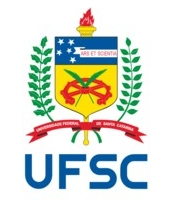
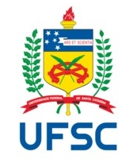

-
 

-
search
O glossário adaptado em libras é usado
para compor as línguas de sinais, que por serem de modalidade visual-espacial,
têm
acarretado em si concepções de desenhos no espaço sinalizado.
O projeto visa criar e catalogar um
glossário
em Língua Brasileira de Sinais – LIBRAS para os estudantes surdos
no ensino superior Universidade Estácio, com definições de termos principais e
mais usados de cada curso “Gestão de Recursos Humanos, Direito e Redes de
Computadores” em cada disciplinas que os alunos surdos se encontra atualmente,
na Universidade Estácio.
Faça o download do projeto aqui:
Download